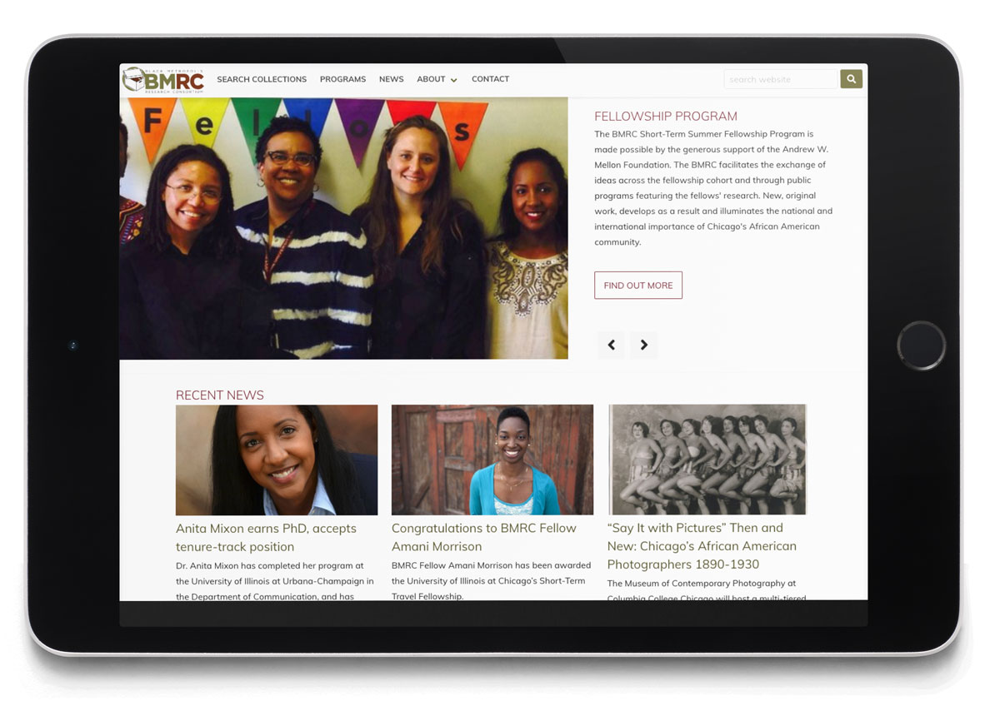
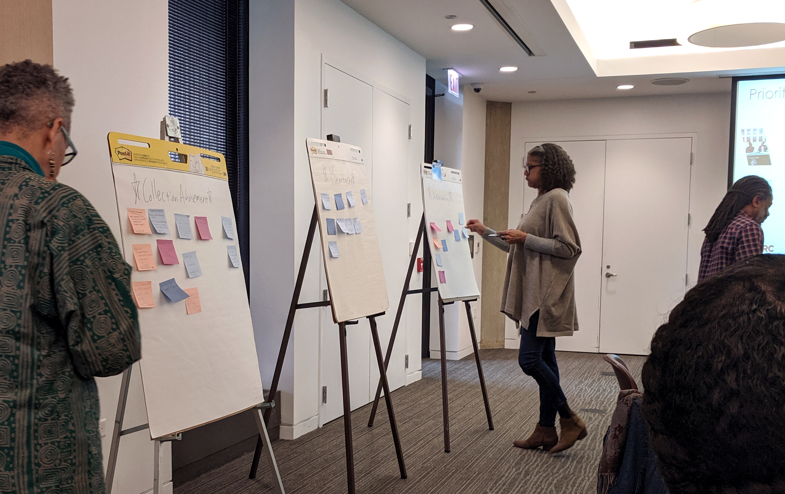
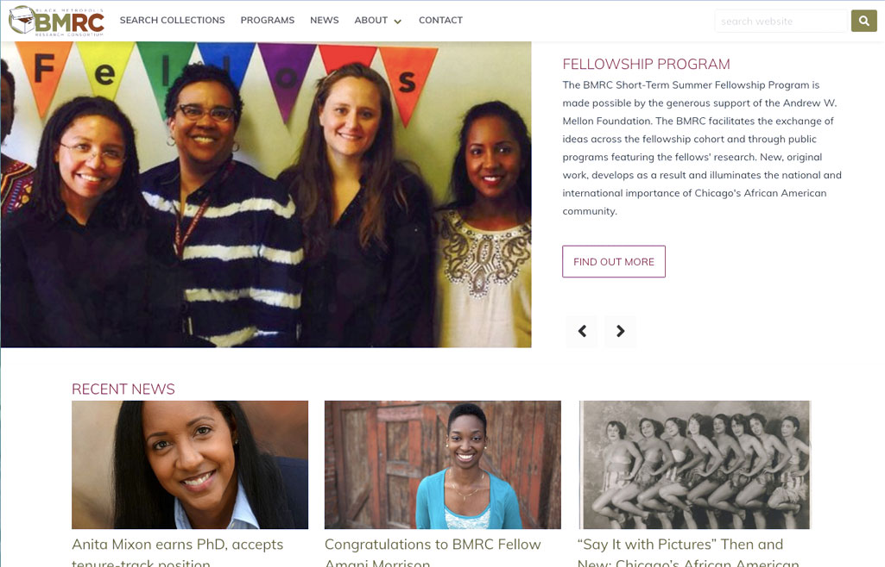
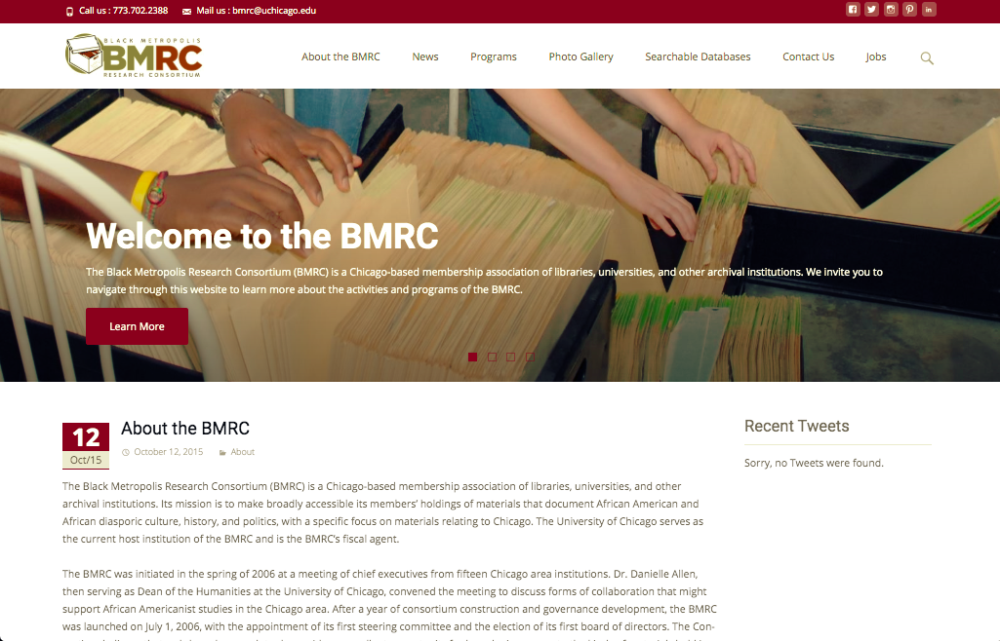

Project planning, Django development, and information organization.

User testing at the Annual Meeting

Before / After


Problem
The Black Metropolis Research Consortium's (BMRC) website was out of date, taking between 8-10 seconds to load, and hosted on an insecure Wordpress instance. Information conflicted itself and users found it hard to locate content.
Solution
Built a custom Wagtail CMS instance with a Bulma CSS framework, stripping away historical requirements that were no longer useful.
Built in WCAG 2.1 AAA compliance into the templates, allowing the web author to simply have to focus on content.
Utilized spec punchlist and client review process to develop and migrate the site on deadline.
Used fragment caching to cache module level items to help speed-up load time to limit server calls.
Impact
Speed improvement from 8.2 seconds to 1.1 second load time.